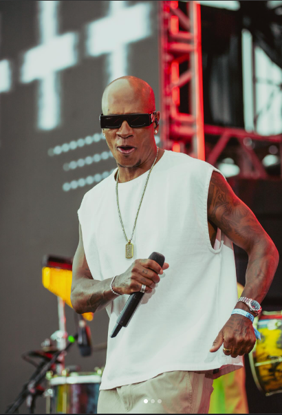
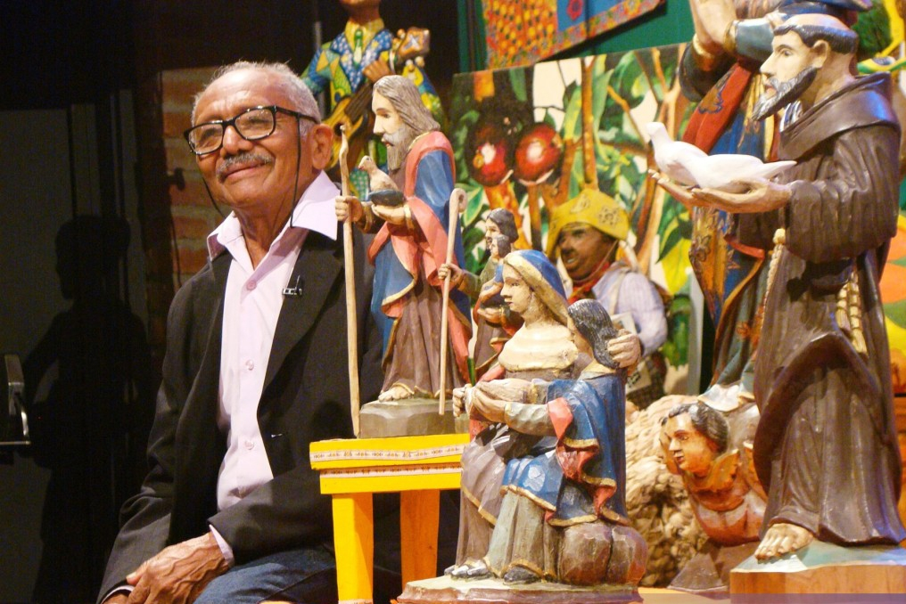
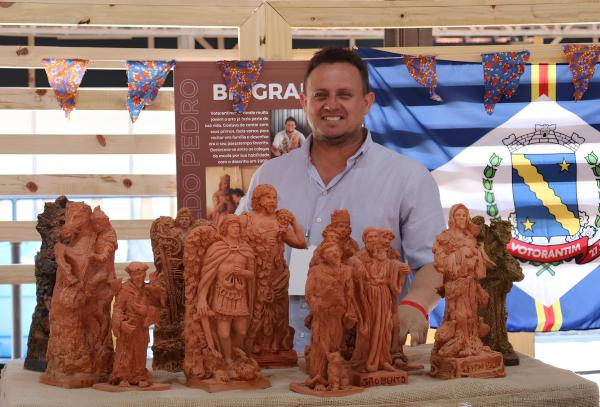

Artistas em Destaque

Leizinho
Leizinho (Leandro Ferreira) é um dos vocalistas e integrantes do grupo brasileiro de pagode Turma do Pagode, conhecido pelo pagode romântico e carreira consolidada, estará presente em Votorantim na Festa Junina de Votorantim 2026.

Chico Santeiro
Chico Santeiro, na verdade Francisco Vieira dos Santos, é um aclamado artesão popular brasileiro radicado em Votorantim-SP. Após perder o emprego como pedreiro, iniciou na escultura em madeira em 1984, produzindo milhares de imagens sacras e figuras regionais.

Osvaldo
Artista plástico votorantinense, desde muito jovem a arte já fazia parte de sua vida. Aprendeu a arte de modelar em argila, nas aulas do Projeto Oficina de Artes Sacras e Ofícios na cidade de Iperó. Participou de diversas exposições, destacando o Resgatando o Vale na cidade de Ilha Comprida, litoral de São Paulo, 30º e 32º Salão de Arte – Distrital Pinheiros, e a Exposição / Workshop no Museu da cidade de Iguape intitulado “Arte da Fé”.